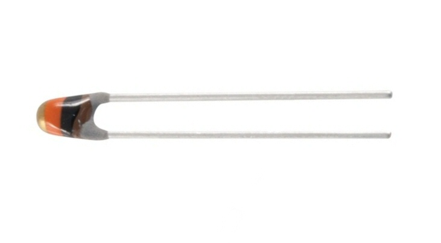
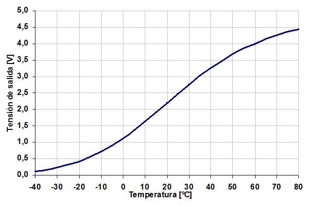

3. Temperature sensor¶
A temperature sensor is an electronic component that returns an electrical signal that depends on the temperature of the sensor. From the electrical signal it is possible to know the actual temperature at which the sensor is located.
There are many different types of temperature sensors. Each type of sensor is well suited to a specific application. In these practices, only low-price sensors that reach a moderate temperature range, from -40ºC to 150ºC, will be studied. With moderate accuracy, from 1ºC to 0.1ºC error.
NTC temperature sensor.
{kind=link}
Temperature sensor based on LM35 integrated circuit.

Temperature sensors are very useful for building temperature measurement devices and machines that automatically regulate temperature. Some practical examples are listed below.
- Digital thermometer to measure body temperature.
- Digital thermostat of a house.
- Oven temperature thermostat.
- Fire sensor.
- Aquarium or terrarium thermostat.
- Digital room temperature thermometer.
Operation of an NTC sensor¶
An NTC resistor is a component that reduces its resistance when the temperature increases. This sensor is not linear. This means that its accuracy is not very good in wide temperature ranges, compared to other sensors. Despite this, a well-adjusted NTC sensor can measure temperatures quite accurately, 0.1ºC in a small temperature interval.
The following graph represents the resistance of an NTC sensor in its temperature measurement range.

As can be seen, the resistance decreases as the temperature increases. The shape of the curve is non-linear, which causes problems when calculating the temperature exactly. The following formula can be used to calculate resistance as a function of temperature.
R = NTC sensor resistance
T = temperature in degrees kelvin
B = Characteristic temperature of the material. Between 2000ºK and 5000ºK
A = Thermistor constant. It depends on the material.
The coefficients and depend on each component and can be found in the manufacturers data sheets or they can be calculated for a specific NTC sensor from a test, measuring the resistance at various temperatures.
Specifications of an NTC sensor¶
An NTC sensor with a nominal value of 10k Ohms at a temperature of 25ºC has been chosen for this section.
- Resistance at 25ºC = 10k Ohms
- Color bands = Brown Black Orange
- Response time = 1.2 seconds
- Constant A = 0.01618 Ohms
- Constant B = 3977 ºK
Below is an image with the voltage curve supplied by this NTC sensor connected to 5 volts, with a 10k Ohm polarization resistor connected to ground.
{kind=link}
Data table with the values of the curve.
Temperature Strain -40 0.117 -35 0.165 -30 0.230 -25 0.314 -twenty 0.422 -fifteen 0.555 -10 0.717 -5 0.908 0 1,128 5 1,373 10 1,638 fifteen 1,918 twenty 2,203 25 2,486 30 2,760 35 3,020 40 3,260 Four. Five 3,480 fifty 3,676 55 3,851 60 4,004 65 4,138 70 4,253 75 4,353 80 4,439
This table can be used to look up intermediate voltage or temperature values using the map() command.
To calculate other out-of-range values or calculate values from a different NTC sensor, you can use the attached excel sheet NTC.
Connection scheme of a heater transistor¶
In the following image you can see the necessary wiring to make a heater based on a transistor BD135.
{kind=link}
This circuit is capable of drawing up to 200 milliamps at 5 volts, providing 1 watt of power. This power is enough to increase the temperature of the transistor 100 degrees Celsius in the open air. If some type of insulation is placed, the temperature can rise even higher, destroying the component.
For this reason it is necessary to take special care not to turn on the transistor at maximum power and take the necessary precautions so that burns do not occur.
The following program allows you to test the heating of the transistor.
1 2 3 4 5 6 7 8 9 | // Enciende el transistor conectado al pin digital 3
void setup() {
pinMode(3, OUTPUT); // Define el pin 3 como salida
}
void loop() {
analogWrite(3, 128); // Señal en pin 3 encendida al 50%
}
|
Connection diagram of an NTC sensor¶
In order for the NTC sensor to give a useful voltage that can be measured, it is necessary to add a bias resistor. This resistor is placed between the sensor and ground as shown in the following diagram.

Self-heating: Self-heating consists of the increase in temperature produced in the NTC sensor by the current supplied to it in order to measure the temperature. If the sensor receives a lot of current, this will artificially increase the interior temperature, producing a temperature reading that is higher than the actual temperature.
If, on the contrary, the resistor receives little current, the voltage signal will be difficult to measure and the electrical noise will also produce measurement errors.
Resistor values between 5k ohms and 50k Ohms maintain a good balance between these two opposing effects when operating in the 0 to 5 volt range. For this reason, a 10k Ohm NTC sensor has been chosen.
Bias Resistor The value of the bias resistor should be approximately equal to the resistance value of the NTC sensor at room temperature. in this way it will be possible to measure with greater precision the range of temperatures close to room temperature. In this assembly, an NTC sensor has been chosen that has a resistance of 10k Ohms at 20ºC and therefore the polarization resistor has the same value.
Analog Input The NTC sensor signal has been connected to an analog input that can accurately measure voltages in the 0 to 5 volt range. A digital input cannot measure more than two different input voltage values and therefore it is not capable of correctly reading the voltage value of an NTC sensor.
The following program allows to measure the voltage generated by the NTC sensor
1 2 3 4 5 6 7 8 9 10 11 12 13 14 15 16 17 18 19 20 21 22 | // Mide el valor de tensión del sensor NTC conectado en
// el pin analógico A0
void setup() {
Serial.begin(115200); // Inicializar el puerto serie
}
void loop() {
// Lee la señal analógica del pin analógico
int ntc = analogRead(A0);
// Convierte el valor del conversor analógico-digital
// en un valor de tensión de 0 a 5 voltios
float volt = ntc * (5.0 / 1024.0);
// Envía el valor de tensión por el puerto serie
Serial.print("Volt =\t");
Serial.println(volt);
// Espera un segundo antes de continuar
delay(1000);
}
|
Exercises¶
Assemble the connection scheme of the temperature sensor with the heating transistor. Complete the following table with the voltage values measured in the sensor for different powers of the heating transistor.
Transistor NTC voltage 0 fifty 100 150 200 250 Every time the power of the heater changes, it will be necessary to wait for the voltage measured on the NTC sensor to stabilize. The duration depends on the components and can be two or three minutes to achieve maximum accuracy.
1 2 3 4 5 6 7 8 9 10 11 12 13 14 15 16 17 18 19 20 21 22 23 24 25 26 27 28 29
// Control de temperatura en lazo abierto. // Calentador: Transistor BD135 // Sensor de temperatura: NTC de 10k Ohmios const int potencia = 0; void setup() { pinMode(3, OUTPUT); // Define el pin 3 como salida Serial.begin(115200); // Inicializar el puerto serie } void loop() { // Establece la potencia del transistor analogWrite(3, potencia); // Lee la señal analógica del pin analógico int ntc = analogRead(A0); // Convierte el valor del conversor analógico-digital // en un valor de tensión de 0 a 5 voltios float volt = ntc * (5.0 / 1024.0); // Envía el valor de tensión por el puerto serie Serial.print("Volt =\t"); Serial.println(volt); // Espera un segundo antes de continuar delay(1000); }
The following program controls the sensor temperature in closed loop. The operating scheme is called all/nothing. When starting, the program turns on the heater at full power. When the temperature exceeds the desired value, the heater turns off completely.
1 2 3 4 5 6 7 8 9 10 11 12 13 14 15 16 17 18 19 20 21 22 23 24 25 26 27 28 29 30 31 32 33 34 35 36
// Control de temperatura en lazo cerrado. // Esquema de control Todo / Nada // Calentador: Transistor BD135 // Sensor de temperatura: NTC de 10k Ohmios void setup() { pinMode(3, OUTPUT); // Define el pin 3 como salida Serial.begin(115200); // Inicializar el puerto serie } void loop() { // Lee la señal analógica del pin analógico int ntc = analogRead(A0); // Convierte el valor del conversor analógico-digital // en un valor de tensión de 0 a 5 voltios float volt = ntc * (5.0 / 1024.0); // Apaga el calentador si la temperatura supera // el nivel establecido. if (volt > 3.5) { Serial.print("OFF "); analogWrite(3, 0); } else { Serial.print("ON "); analogWrite(3, 255); } // Envía el valor de tensión por el puerto serie Serial.print("Volt =\t"); Serial.println(volt); // Espera un segundo antes de continuar delay(1000); }